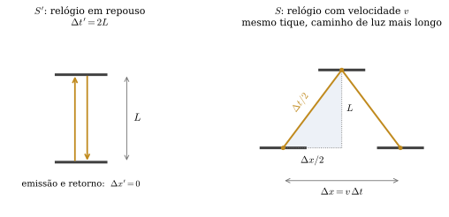
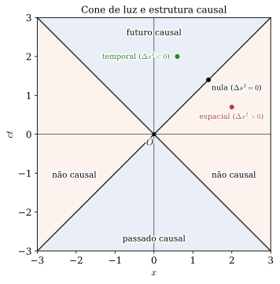
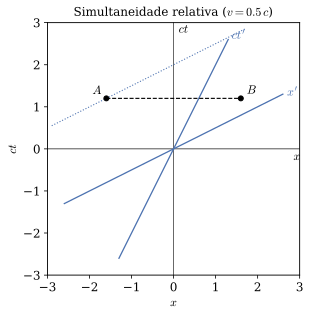
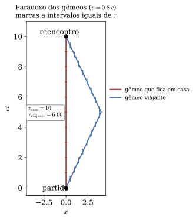
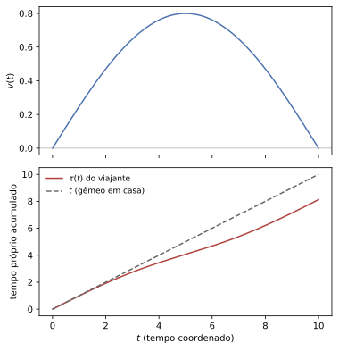

Relatividade Geral · UDESC/CCT · Capítulo 1
Relatividade
especial
A geometria do espaço-tempo plano. O intervalo como grandeza invariante, e o tempo próprio como o que um relógio de fato mede.
Aulas 2 a 7 · use → e ← para navegar, F para tela cheia
Roteiro
O caminho deste capítulo
| Aula | Assunto |
|---|---|
| 2 | Newton e Einstein · eventos e intervalo |
| 3 | Tempo próprio · transformações de Lorentz |
| 4 | O que se mede: contração e velocidades |
| 5 | Diagramas de Minkowski · gêmeos |
| 6 | A velocidade invariante é única · problemas e exemplos |
| 7 | Oficina computacional · exercícios |
A pergunta que organiza tudo
Se a velocidade da luz é a mesma para todos os observadores, o que mais precisa mudar?
A resposta custa o tempo absoluto de Newton — e é isso que o capítulo cobra.
Aula 2 · Seção 1.1
Duas visões de mundo
A maior dificuldade do curso não está na matemática — está em desmontar hipóteses que parecem óbvias por nunca terem sido enunciadas.
| Newton | Einstein | |
|---|---|---|
| Tempo | absoluto, universal | relativo ao observador |
| Espaço | palco fixo | inseparável do tempo |
| Simultaneidade | absoluta | depende do referencial |
| Velocidade máxima | não existe | c, igual para todos |
| Invariante | tempo e distância, separados | o intervalo, que os combina |
| Gravidade | força instantânea | curvatura (Relatividade Geral) |
Aula 2 · Seção 1.1
A transformação de Galileu
A segunda equação apenas desconta o quanto a origem andou. A primeira é a hipótese forte — e passa despercebida justamente por parecer óbvia.
Consequência imediata: velocidades se somam, u'=u-v.
Onde quebra
Aplique a um pulso de luz: u=c daria u'=c-v. Quem corresse junto veria a luz parada.
Maxwell diz que não, e Michelson–Morley mede que não.
Aula 2 · Seção 1.1
Os dois postulados
- As leis da física têm a mesma forma em todos os referenciais inerciais — o princípio da relatividade, que já valia para Newton.
- A velocidade da luz no vácuo vale c em todos os referenciais inerciais, independentemente do movimento da fonte ou do observador.
A culpada é t'=t, e não x'=x-vt. Enquanto o tempo não participar da transformação, só sobra a posição para ajustar — insuficiente para manter c fixo.
O preço é a simultaneidade deixar de ser absoluta. É inegociável.
Aula 2 · Seção 1.2
Evento e intervalo
Um evento é algo que ocorre em um ponto e em um instante:
O intervalo entre dois eventos próximos é
\mathrm{d}s^2 é invariante sob transformações de Lorentz. Essa invariância substitui o tempo absoluto de Newton no papel de referência comum a todos.
Convenção de sinais: (-,+,+,+). Unidades com c=1.
Aula 2 · Seção 1.2
O relógio de luz

Em S, o caminho do pulso é \sqrt{4L^2+\Delta x^2}. Como a luz também viaja com velocidade 1 aqui — é a única vez que o postulado entra — esse caminho é numericamente o tempo:
O mesmo número nos dois referenciais.
Aula 2 · Seção 1.2
Uma hipótese que precisa de defesa
A conta supôs que L, transversal ao movimento, é a mesma nos dois referenciais. Isso não é gratuito.
Dois anéis idênticos aproximam-se ao longo do eixo comum. Se o movimento encolhesse comprimentos transversais, cada observador diria que o anel do outro é menor e preveria que o seu passa por fora.
Mas qual anel passou dentro de qual é um fato absoluto — fica registrado em qualquer marca de raspagem.
A única possibilidade consistente é que comprimentos perpendiculares ao movimento não mudem.
Aula 2 · Seção 1.2
O que o sinal do intervalo diz
| Sinal | Separação | Existe referencial em que… |
|---|---|---|
| \mathrm{d}s^2<0 | temporal | os eventos ocorrem no mesmo lugar |
| \mathrm{d}s^2=0 | nula | um raio de luz os liga |
| \mathrm{d}s^2>0 | espacial | são simultâneos |
Como o valor é invariante, o sinal também é: dois observadores nunca discordam se um evento pode influenciar o outro.

Aula 2 · Seção 1.2
Invariante não é constante
Invariante significa que observadores diferentes, medindo o mesmo par de eventos, obtêm o mesmo número.
Não significa que \mathrm{d}s^2 tenha o mesmo valor para pares de eventos diferentes.
E a invariância é da combinação: tomados isoladamente, \mathrm{d}t e \mathrm{d}x mudam de referencial para referencial — e é precisamente por isso que dilatação do tempo e contração do comprimento existem.
Aula 3 · Seção 1.3
Tempo próprio
Ao longo da linha de mundo de uma partícula massiva, \mathrm{d}s^2<0. Define-se
No referencial que acompanha a partícula, \mathrm{d}x=0 e sobra \mathrm{d}\tau=\mathrm{d}t: \tau é o tempo marcado pelo relógio que viaja com ela.
Para quem não viaja junto, com velocidade v:
Duas linhas de conta, nenhuma hipótese nova. A dilatação do tempo não é um efeito à parte — é a leitura desta equação.
Aula 3 · Seção 1.4
Diagnóstico de Galileu
Com t'=t e x'=x-vt:
Sobrou -2v\,\mathrm{d}t\,\mathrm{d}x+v^2\mathrm{d}t^2: Galileu não preserva o intervalo.
O vilão é o termo cruzado \mathrm{d}t\,\mathrm{d}x. Para eliminá-lo, a nova coordenada temporal precisa conter um pedaço de x — e é exatamente isso que a transformação correta vai fazer.
Aula 3 · Seção 1.4
Deduzindo Lorentz
Por homogeneidade, a transformação é linear: t'=At+Bx, x'=Ct+Dx. Duas condições fixam tudo.
1 · A origem de S' move-se com v
x'=0 \Leftrightarrow x=vt \Rightarrow C=-Dv
2 · O intervalo é invariante
Isolando B na terceira e levando à segunda: D^2(A^2-D^2v^2)=A^2, e o parêntese vale 1. Logo D^2=A^2.
D=-A comporia com uma reflexão e não tende à identidade quando v\to0 — fica A=D\equiv\gamma.
Aula 3 · Seção 1.4
O limite newtoniano não é v\to0
Restaurando c:
Os dois termos cruzados não são da mesma ordem: um carrega 1/c^2, o outro não.
O limite newtoniano é c\to\infty com v fixo — e não v\to0, que daria a identidade.
Aí \gamma\to1, o termo vx/c^2 desaparece, e sobra Galileu. O que morre é justamente o termo de simultaneidade.
Aula 4 · Seção 1.5
Um comprimento é uma medida simultânea
Uma barra em repouso em S' tem comprimento próprio L_0. Em S, onde ela desliza, medir significa registrar as duas extremidades no mesmo instante: \Delta t=0.
De x'=\gamma(x-vt), com \Delta t=0:
Por que \gamma troca de lugar?
No tempo, os eventos ocorrem no mesmo lugar do referencial próprio (\Delta x'=0). No comprimento, ocorrem ao mesmo tempo do referencial que mede (\Delta t=0). São condições diferentes, em lados diferentes da transformação.
Quem decora erra; quem pergunta "o que está fixo?" acerta.
Aula 4 · Seção 1.5
Nenhum dos dois está enganado
A contração é recíproca — e isso não é contradição, pela mesma razão que a dilatação recíproca não é: cada observador mede um par de eventos diferente.
Quando S registra as duas pontas simultaneamente segundo o seu relógio, esses registros não são simultâneos para S' — que vê S medir a ponta da frente e a de trás em instantes distintos.
Nada disso significa que "o tempo fica lento" ou que "a barra encolhe" em sentido absoluto. Tempo próprio e comprimento próprio são propriedades dos objetos, e ninguém discorda deles. O que depende do observador é o resultado de uma medida que envolve simultaneidade.
Aula 4 · Seção 1.5
Velocidades não se somam
Dividindo uma linha da transformação pela outra — os \gamma se cancelam:
A luz é ponto fixo
u=1 \Rightarrow u'=\dfrac{1-v}{1-v}=1 para qualquer v.
O segundo postulado reaparece — agora como teorema.
A barreira é algébrica
Se |u|<1 e |v|<1, o lado direito é positivo. Nenhuma composição de subluminais escapa.
Aula 5 · Seção 1.6
Os eixos de S'
Eixo t': os eventos com x'=0, ou seja x=vt — a própria linha de mundo da origem de S'.
Eixo x': os eventos com t'=0, ou seja t=vx — o que S' considera simultâneo.
Os dois se fecham sobre a linha de luz, pelo mesmo ângulo \arctan v, em sentidos opostos.
É dessa tesoura que sai visualmente a relatividade da simultaneidade.

Aula 5 · Seção 1.6
Falta a escala
Saber a direção dos eixos não basta: é preciso saber onde fica t'=1. E aqui a intuição euclidiana atrapalha — o papel é euclidiano, o espaço-tempo não. Não se marca a unidade com régua.
Quem resolve é o próprio invariante:
Uma hipérbole com assíntotas t=\pm x — o cone de luz. Todos os seus pontos estão à mesma distância de Minkowski da origem, para qualquer observador. Logo ela cruza o eixo t' exatamente onde t'=1.
No papel a unidade de t' parece maior: a interseção está em (\gamma,\gamma v), à distância euclidiana \gamma\sqrt{1+v^2}>1. O papel mede comprimentos euclidianos; a física mede intervalos.
Aula 5 · Seção 1.7
Paradoxo dos gêmeos
Não é contradição porque as duas linhas de mundo entre "partida" e "reencontro" não são equivalentes.
As marcas na figura são intervalos iguais de tempo próprio. O viajante acumula visivelmente menos, percorrendo o mesmo par de eventos.

Aula 5 · Seção 1.7
A inercial é a de maior tempo próprio
Num referencial em que os dois eventos ocorrem no mesmo lugar, qualquer linha de mundo temporal ligando-os acumula
com igualdade se e somente se v(t)=0 sempre — exatamente a reta inercial.
A desigualdade triangular se inverte
No plano, o caminho reto é o mais curto. No espaço-tempo, a linha de mundo reta é a mais longa em tempo próprio. Desviar custa relógio.
O viajante não envelhece menos por causa da aceleração — envelhece menos porque desviou. A conta acima não menciona aceleração nenhuma: basta conhecer v(t).
Aula 6 · Seção 1.8 · aprofundamento
E se ninguém falasse de luz?
A velocidade da luz entrou como postulado, quase por decreto. Seria possível chegar à mesma estrutura sem mencioná-la?
Três hipóteses, nenhuma sobre luz:
- Homogeneidade — nenhum ponto ou instante é privilegiado (⇒ a transformação é linear);
- Isotropia — nenhuma direção é privilegiada;
- Princípio da relatividade — a transformação de S' para S tem a mesma forma, com v\to-v.
É o argumento de Ignatowski (1910). Schutz não o faz.
Aula 6 · Seção 1.8
Uma única constante sobrevive
A forma geral é x'=\gamma(x-vt), t'=\gamma(t-\beta x). O princípio da relatividade exige que a inversa seja a direta com v\to-v, o que dá \gamma^2(1-\beta v)=1; e a composição de duas transformações ser do mesmo tipo força \beta/v a não depender de v. Chame-o de K:
| Caso | Resultado |
|---|---|
| K=0 | Galileu — não é rival, é o caso particular |
| K>0 | escreva K=1/c^2: existe velocidade invariante |
| K<0 | rotações euclidianas — nenhuma ordem causal sobrevive |
Aula 6 · Seção 1.8
Onde o experimento entra
O ponto não é dispensar o experimento — K tem de ser medido, e é. O ponto é onde ele entra.
Ele não determina a forma das equações, já fixada por homogeneidade, isotropia e relatividade sozinhas. Determina apenas o valor de um número.
E, medido K>0, a existência de uma velocidade invariante é consequência, não hipótese: ela existiria mesmo que o fóton tivesse massa.
A luz é rápida porque o fóton não tem massa; c é invariante porque o espaço-tempo é assim.
Aula 6 · Seção 1.9
Problemas orientados
Seis, feitos em aula ou em casa, cada um atacando um mal-entendido específico.
| 1 | Relógio de luz — refazer a dilatação usando apenas a invariância do intervalo |
| 2 | A barra e o celeiro — quatro eventos, dois veredictos, nenhuma contradição |
| 3 | Ordem temporal — inverter a ordem de dois eventos sem violar causalidade |
| 4 | Tempo próprio máximo — a inercial contra uma linha de mundo qualquer |
| 5 | Velocidades transversais — até a aberração estelar, medida em 1728 |
| 6 | Rapidez — o parâmetro que restaura a soma |
Aula 6 · Seção 1.9 · problema 2
A barra e o celeiro
Barra de comprimento próprio L_0, celeiro de L_0/2, com \gamma=2.
O fazendeiro
A barra contrai para L_0/2 e cabe exatamente. As duas portas fecham ao mesmo tempo, com ela inteira dentro.
O piloto
É o celeiro que contrai, para L_0/4. A barra mede L_0 e não cabe de jeito nenhum.
Os dois não podem estar errados sobre um fato: a barra ficou presa ou não ficou. E ficar presa não é o que eles discordam.
Aula 6 · Seção 1.9 · problema 2
A resolução está nos quatro eventos
No celeiro S, com a porta de entrada em x=0 e a de saída em x=L_0/2, ambas fecham em t=0. Aplicando t'=\gamma(t-vx):
Para o piloto, a porta da saída fecha e reabre antes — bem antes de sua ponta dianteira chegar lá. Depois, já com a barra atravessando, a porta da entrada fecha e reabre atrás dela.
A barra nunca está inteira dentro para o piloto, e nunca é atingida por porta nenhuma. Os dois relatos descrevem os mesmos quatro eventos; o que difere é só quais deles são simultâneos.
E se as portas ficassem trancadas? Aí há colisão — e nada de corpo rígido: a notícia do impacto percorre a barra no máximo a c, de modo que a outra ponta ainda não sabe de nada.
Aula 6 · Seção 1.10
Rapidez: o parâmetro que soma
Defina \varphi por v=\tanh\varphi. Então \gamma=\cosh\varphi e \gamma v=\sinh\varphi, e a transformação vira
É uma rotação hiperbólica no plano (t,x) — a mesma forma de uma rotação euclidiana, com seno e cosseno trocados por suas versões hiperbólicas.
E a razão do sinal: rotações preservam x^2+y^2; estas preservam -t^2+x^2.
Boosts sucessivos somam rapidezes:
A lei estranha de composição de velocidades é só \tanh(\varphi_1+\varphi_2) reescrita. A soma nunca sumiu — mudou de variável.
Aula 6 · Seção 1.10
Mais dois exemplos resolvidos
Simultaneidade relativa
Dois eventos com \Delta t=0 e \Delta x=L em S. Em S':
Só é nulo se v=0 ou L=0: eventos simultâneos e separados nunca continuam simultâneos.
Trajetória por partes
Ida com v por T/2, volta com -v por T/2:
Contra T na Terra. A diferença não vem do instante da virada — vem de todo o trajeto em movimento.
O terceiro exemplo, a invariância do cone de luz: se \Delta x=\Delta t em um referencial, o mesmo vale em qualquer outro — porque \Delta s^2=0 é invariante, e zero continua zero por mais que \gamma o multiplique.
Aula 7 · Seção 1.11
Oficina computacional
Boosts — verificar numericamente que \Lambda^{T}\eta\Lambda=\eta, que boosts compõem pela fórmula relativística (e não por soma), e que a rapidez \varphi=\operatorname{artanh}v é aditiva.
Tempo próprio — integrar \tau=\int\sqrt{1-v(t)^2}\,\mathrm{d}t para um perfil suave, sem forma fechada.
Com T=10 e v_0=0{,}8: \tau\approx8{,}13. Usar \gamma da velocidade média daria 8{,}61 — \gamma não comuta com a média.

Fechamento
O que fica
Uma ideia
O intervalo é o que todos os observadores medem igual. Tudo o mais — dilatação, contração, simultaneidade — é consequência.
Uma conta
O relógio que viaja marca menos. Nada além disso é necessário para o paradoxo dos gêmeos.
Uma inversão
No espaço-tempo, a reta é o caminho mais longo em tempo próprio. Desviar custa relógio.
O que vem
Se existe velocidade máxima, nenhuma influência é instantânea — e a gravidade newtoniana, instantânea por construção, fica insustentável.
É o impasse que a Relatividade Geral vem resolver.
Para a próxima aula
Exercícios
Cinco por capítulo, para entrega — dois fáceis, dois médios, um difícil. A marca indica a seção do Schutz que cobre o assunto.
| Assunto | Schutz | |
|---|---|---|
| 1 | Classificar uma separação e achar o referencial simultâneo | 1.6 |
| 2 | Régua e relógio: por que \gamma troca de lugar | 1.8 |
| 3 | Composição de velocidades; nenhuma soma ultrapassa c | 1.10 |
| 4 | Hipérboles invariantes calibrando o diagrama | 1.7 |
| 5 | Duas naves em sentidos opostos — qual par de eventos cada capitão compara? | 1.11 |
E três problemas de Conteúdo extra, que pedem para modificar os programas da página da disciplina: rotação de Wigner, perfis de viagem, e o horizonte de Rindler.